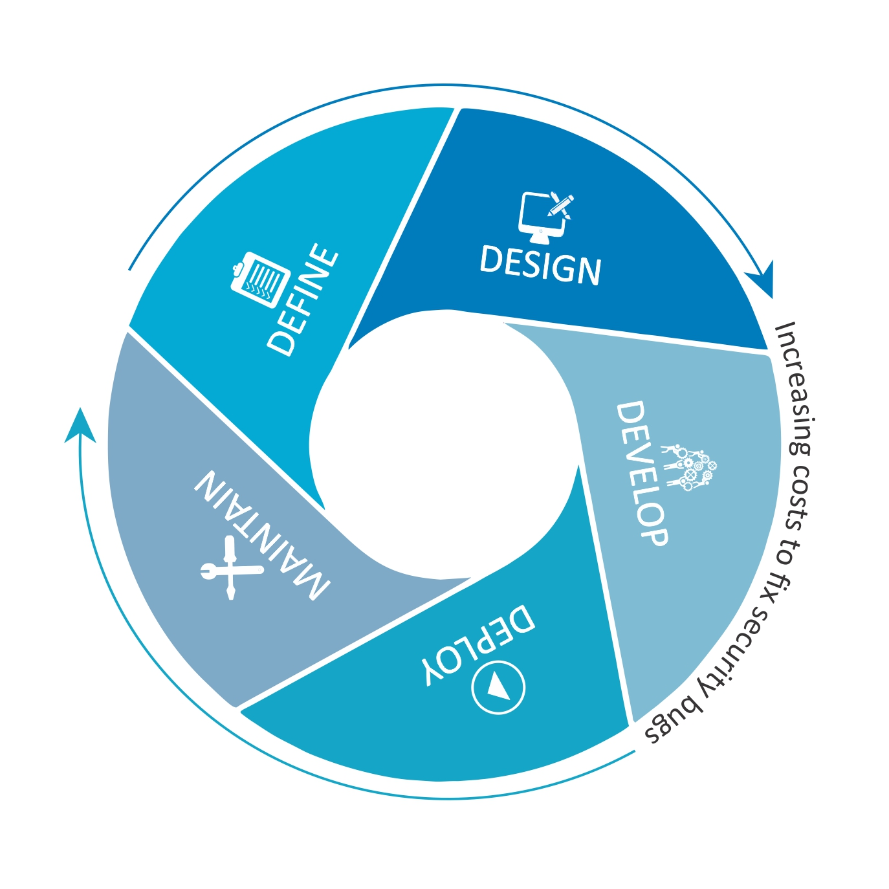
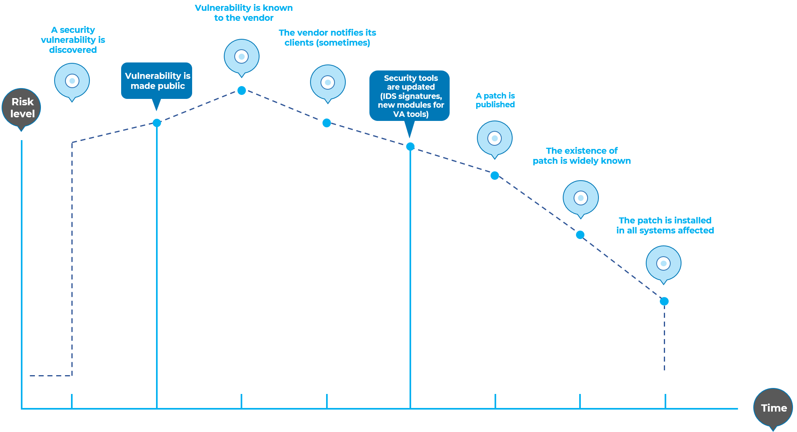
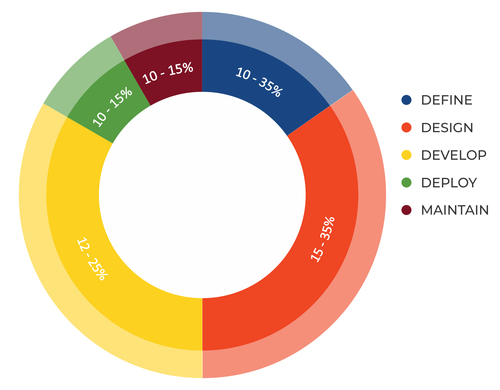
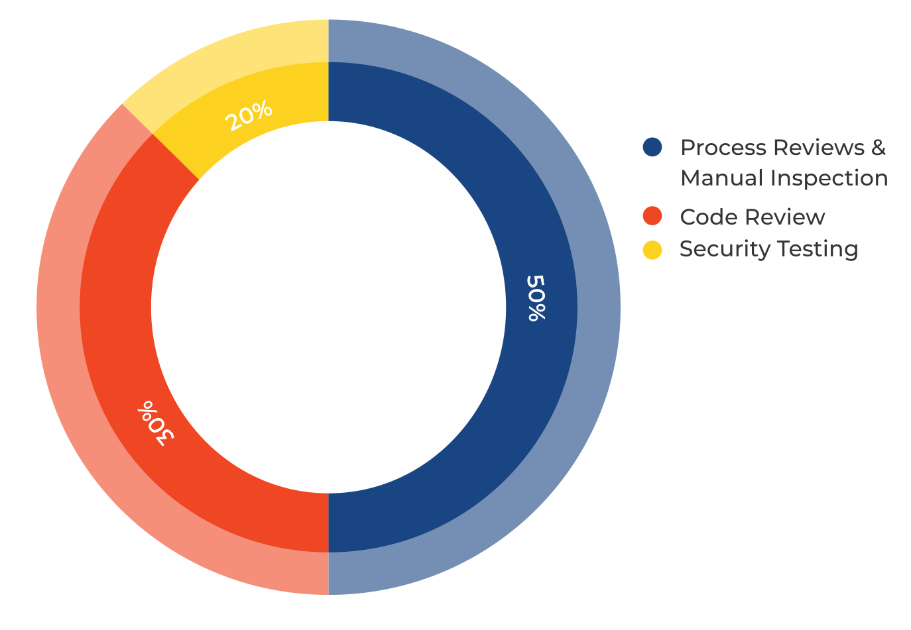
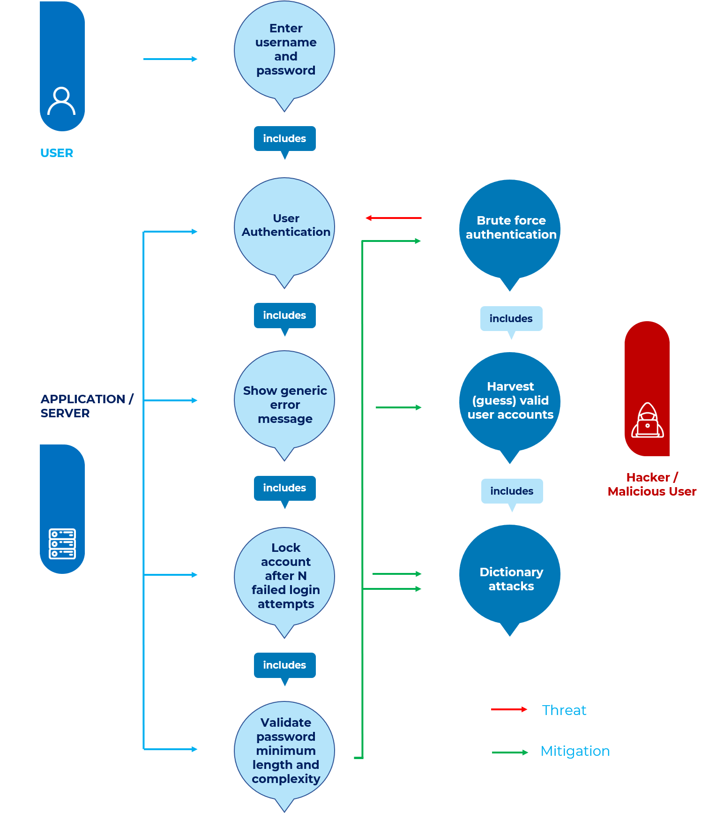

Introduction
The OWASP Testing Project
The OWASP Testing Project has been in development for many years. The aim of the project is to help people understand the what, why, when, where, and how of testing web applications. The project has delivered a complete testing framework, not merely a simple checklist or prescription of issues that should be addressed. Readers can use this framework as a template to build their own testing programs or to qualify other people’s processes. The Testing Guide describes in detail both the general testing framework and the techniques required to implement the framework in practice.
Writing the Testing Guide has proven to be a difficult task. It was a challenge to obtain consensus and develop content that allowed people to apply the concepts described in the guide, while also enabling them to work in their own environment and culture. It was also a challenge to change the focus of web application testing from penetration testing to testing integrated in the software development life cycle.
However, the group is very satisfied with the results of the project. Many industry experts and security professionals, some of whom are responsible for software security at some of the largest companies in the world, are validating the testing framework. This framework helps organizations test their web applications in order to build reliable and secure software. The framework does not simply highlight areas of weakness, although the latter is certainly a by-product of many of the OWASP guides and checklists. As such, hard decisions had to be made about the appropriateness of certain testing techniques and technologies. The group fully understands that not everyone will agree upon all of these decisions. However, OWASP is able to take the high ground and change culture over time through awareness and education based on consensus and experience.
The rest of this guide is organized as follows: this introduction covers the pre-requisites of testing web applications and the scope of testing. It also covers the principles of successful testing and testing techniques, best practices for reporting, and business cases for security testing. Chapter 3 presents the OWASP Testing Framework and explains its techniques and tasks in relation to the various phases of the software development life cycle. Chapter 4 covers how to test for specific vulnerabilities (e.g., SQL Injection) by code inspection and penetration testing.
Measuring Security: the Economics of Insecure Software
A basic tenet of software engineering is summed up in a quote from Controlling Software Projects: Management, Measurement, and Estimates by Tom DeMarco:
You can’t control what you can’t measure.
Security testing is no different. Unfortunately, measuring security is a notoriously difficult process.
One aspect that should be emphasized is that security measurements are about both the specific technical issues (e.g., how prevalent a certain vulnerability is) and how these issues affect the economics of software. Most technical people will at least understand the basic issues, or they may have a deeper understanding of the vulnerabilities. Sadly, few are able to translate that technical knowledge into monetary terms and quantify the potential cost of vulnerabilities to the application owner’s business. Until this happens, CIOs will not be able to develop an accurate return on security investment and, subsequently, assign appropriate budgets for software security. While estimating the cost of insecure software may appear a daunting task, there has been a significant amount of work in this direction. For example, in June 2002, the US National Institute of Standards (NIST) published a survey on the cost of insecure software to the US economy due to inadequate software testing. Interestingly, they estimate that a better testing infrastructure would save more than a third of these costs, or about $22 billion a year. More recently, the links between economics and security have been studied by academic researchers. Ross Andrerson’s page on economics and security has more information about some of these efforts.
The framework described in this document encourages people to measure security throughout the entire development process. They can then relate the cost of insecure software to the impact it has on the business, and consequently develop appropriate business processes and assign resources to manage the risk. Remember that measuring and testing web applications is even more critical than for other software, since web applications are exposed to millions of users through the Internet.
What is Testing?
Many things need to be tested during the development life cycle of a web application, but what does testing actually mean? The Oxford Dictionary of English defines “test” as:
test (noun): a procedure intended to establish the quality, performance, or reliability of something, especially before it is taken into widespread use.
For the purposes of this document, testing is a process of comparing the state of a system or application against a set of criteria. In the security industry, people frequently test against a set of mental criteria that are neither well defined nor complete. As a result of this, many outsiders regard security testing as a black art. The aim of this document is to change that perception, and to make it easier for people without in-depth security knowledge to make a difference in testing.
Why Perform Testing?
This document is designed to help organizations understand what comprises a testing program, and to help them identify the steps that need to be undertaken to build and operate a testing program on web applications. The guide gives a broad view of the elements required to make a comprehensive web application security program. This guide can be used as a reference guide and as a methodology to help determine the gap between existing practices and industry best practices. This guide allows organizations to compare themselves against industry peers, to understand the magnitude of resources required to test and maintain software, or to prepare for an audit. This chapter does not go into the technical details of how to test an application, as the intent is to provide a typical security organizational framework. The technical details about how to test an application, as part of a penetration test or code review, will be covered in the remaining parts of this document.
When to Test?
Most people today don’t test software until it has already been created and is in the deployment phase of its life cycle (i.e., code has been created and instantiated into a working web application). This is generally a very ineffective and cost-prohibitive practice. One of the best methods to prevent security bugs from appearing in production applications is to improve the Software Development Life Cycle (SDLC) by including security in each of its phases. An SDLC is a structure imposed on the development of software artifacts. If an SDLC is not currently being used in your environment, it is time to pick one! The following figure shows a generic SDLC model as well as the (estimated) increasing cost of fixing security bugs in such a model.

Figure 2-1: Generic SDLC Model
Companies should inspect their overall SDLC to ensure that security is an integral part of the development process. SDLCs should include security tests to ensure security is adequately covered and controls are effective throughout the development process.
What to Test?
It can be helpful to think of software development as a combination of people, process, and technology. If these are the factors that “create” software, then it is logical that these are the factors that must be tested. Today most people generally test the technology or the software itself.
An effective testing program should have components that test the following:
People – to ensure that there is adequate education and awareness;
Process – to ensure that there are adequate policies and standards and that people know how to follow these policies;
Technology – to ensure that the process has been effective in its implementation.
Unless a holistic approach is adopted, testing just the technical implementation of an application will not uncover management or operational vulnerabilities that could be present. By testing the people, policies, and processes, an organization can catch issues that would later manifest themselves into defects in the technology, thus eradicating bugs early and identifying the root causes of defects. Likewise, testing only some of the technical issues that can be present in a system will result in an incomplete and inaccurate security posture assessment.
Denis Verdon, Head of Information Security at Fidelity National Financial, presented an excellent analogy for this misconception at the OWASP AppSec 2004 Conference in New York:
If cars were built like applications … safety tests would assume frontal impact only. Cars would not be roll tested, or tested for stability in emergency maneuvers, brake effectiveness, side impact, and resistance to theft.
Feedback and Comments
As with all OWASP projects, we welcome comments and feedback. We especially like to know that our work is being used and that it is effective and accurate.
Principles of Testing
There are some common misconceptions when developing a testing methodology to find security bugs in software. This chapter covers some of the basic principles that professionals should take into account when performing security tests on software.
There is No Silver Bullet
While it is tempting to think that a security scanner or application firewall will provide many defenses against attack or identify a multitude of problems, in reality there is no silver bullet to the problem of insecure software. Application security assessment software, while useful as a first pass to find low-hanging fruit, is generally immature and ineffective at in-depth assessments or providing adequate test coverage. Remember that security is a process and not a product.
Think Strategically, Not Tactically
Security professionals have come to realize the fallacy of the patch-and-penetrate model that was pervasive in information security during the 1990’s. The patch-and-penetrate model involves fixing a reported bug, but without proper investigation of the root cause. This model is usually associated with the window of vulnerability, also referred to as window of exposure, shown in the figure below. The evolution of vulnerabilities in common software used worldwide has shown the ineffectiveness of this model. For more information about windows of exposure, see Schneier on Security.
Vulnerability studies such as Symantec’s Internet Security Threat Report have shown that with the reaction time of attackers worldwide, the typical window of vulnerability does not provide enough time for patch installation, since the time between a vulnerability being uncovered and an automated attack against it being developed and released is decreasing every year.
There are several incorrect assumptions in the patch-and-penetrate model. Many users believe that patches interfere with normal operations or might break existing applications. It is also incorrect to assume that all users are aware of newly released patches. Consequently not all users of a product will apply patches, either because they think patching may interfere with how the software works, or because they lack knowledge about the existence of the patch.

Figure 2-2: Window of Vulnerability
It is essential to build security into the Software Development Life Cycle (SDLC) to prevent reoccurring security problems within an application. Developers can build security into the SDLC by developing standards, policies, and guidelines that fit and work within the development methodology. Threat modeling and other techniques should be used to help assign appropriate resources to those parts of a system that are most at risk.
The SDLC is King
The SDLC is a process that is well-known to developers. By integrating security into each phase of the SDLC, it allows for a holistic approach to application security that leverages the procedures already in place within the organization. Be aware that while the names of the various phases may change depending on the SDLC model used by an organization, each conceptual phase of the archetype SDLC will be used to develop the application (i.e., define, design, develop, deploy, maintain). Each phase has security considerations that should become part of the existing process, to ensure a cost-effective and comprehensive security program.
There are several secure SDLC frameworks in existence that provide both descriptive and prescriptive advice. Whether a person takes descriptive or prescriptive advice depends on the maturity of the SDLC process. Essentially, prescriptive advice shows how the secure SDLC should work, and descriptive advice shows how it is used in the real world. Both have their place. For example, if you don’t know where to start, a prescriptive framework can provide a menu of potential security controls that can be applied within the SDLC. Descriptive advice can then help drive the decision process by presenting what has worked well for other organizations. Descriptive secure SDLCs include BSIMM-V; and the prescriptive secure SDLCs include OWASP’s Open Software Assurance Maturity Model (OpenSAMM) and ISO/IEC 27034 Parts 1-8, parts of which are still in development.
Test Early and Test Often
When a bug is detected early within the SDLC it can be addressed faster and at a lower cost. A security bug is no different from a functional or performance-based bug in this regard. A key step in making this possible is to educate the development and QA teams about common security issues and the ways to detect and prevent them. Although new libraries, tools, or languages can help design programs with fewer security bugs, new threats arise constantly and developers must be aware of the threats that affect the software they are developing. Education in security testing also helps developers acquire the appropriate mindset to test an application from an attacker’s perspective. This allows each organization to consider security issues as part of their existing responsibilities.
Understand the Scope of Security
It is important to know how much security a given project will require. The assets that are to be protected should be given a classification that states how they are to be handled (e.g., confidential, secret, top secret). Discussions should occur with legal council to ensure that any specific security requirements will be met. In the USA, requirements might come from federal regulations, such as the Gramm-Leach-Bliley Act, or from state laws, such as the California SB-1386. For organizations based in EU countries, both country-specific regulation and EU Directives may apply. For example, Directive 96/46/EC4 makes it mandatory to treat personal data in applications with due care, whatever the application.
Develop the Right Mindset
Successfully testing an application for security vulnerabilities requires thinking “outside of the box.” Normal use cases will test the normal behavior of the application when a user is using it in the manner that is expected. Good security testing requires going beyond what is expected and thinking like an attacker who is trying to break the application. Creative thinking can help to determine what unexpected data may cause an application to fail in an insecure manner. It can also help find any assumptions made by web developers that are not always true, and how those assumptions can be subverted. One reason that automated tools do a poor job of testing for vulnerabilities is that automated tools do not think creatively. Creative thinking must be done on a case-by-case basis, as most web applications are being developed in a unique way (even when using common frameworks).
Understand the Subject
One of the first major initiatives in any good security program should be to require accurate documentation of the application. The architecture, data-flow diagrams, use cases, etc, should be recorded in formal documents and made available for review. The technical specification and application documents should include information that lists not only the desired use cases, but also any specifically disallowed use cases. Finally, it is good to have at least a basic security infrastructure that allows the monitoring and trending of attacks against an organization’s applications and network (e.g., IDS systems).
Use the Right Tools
While we have already stated that there is no silver bullet tool, tools do play a critical role in the overall security program. There is a range of open source and commercial tools that can automate many routine security tasks. These tools can simplify and speed up the security process by assisting security personnel in their tasks. However, it is important to understand exactly what these tools can and cannot do so that they are not oversold or used incorrectly.
The Devil is in the Details
It is critical not to perform a superficial security review of an application and consider it complete. This will instill a false sense of confidence that can be as dangerous as not having done a security review in the first place. It is vital to carefully review the findings and weed out any false positives that may remain in the report. Reporting an incorrect security finding can often undermine the valid message of the rest of a security report. Care should be taken to verify that every possible section of application logic has been tested, and that every use case scenario was explored for possible vulnerabilities.
Use Source Code When Available
While black-box penetration test results can be impressive and useful to demonstrate how vulnerabilities are exposed in a production environment, they are not the most effective or efficient way to secure an application. It is difficult for dynamic testing to test the entire code base, particularly if many nested conditional statements exist. If the source code for the application is available, it should be given to the security staff to assist them while performing their review. It is possible to discover vulnerabilities within the application source that would be missed during a black-box engagement.
Develop Metrics
An important part of a good security program is the ability to determine if things are getting better. It is important to track the results of testing engagements, and develop metrics that will reveal the application security trends within the organization.
Good metrics will show:
- If more education and training are required;
- If there is a particular security mechanism that is not clearly understood by the development team;
- If the total number of security related problems being found each month is going down.
Consistent metrics that can be generated in an automated way from available source code will also help the organization in assessing the effectiveness of mechanisms introduced to reduce security bugs in software development. Metrics are not easily developed, so using standard metrics like those provided by the OWASP Metrics project and other organizations is a good starting point.
Document the Test Results
To conclude the testing process, it is important to produce a formal record of what testing actions were taken, by whom, when they were performed, and details of the test findings. It is wise to agree on an acceptable format for the report that is useful to all concerned parties, which may include developers, project management, business owners, IT department, audit, and compliance.
The report should clearly identify to the business owner where material risks exist, and do so in a manner sufficient to get their backing for subsequent mitigation actions. The report should also be clear to the developer in pin-pointing the exact function that is affected by the vulnerability and associated recommendations for resolving issues in a language that the developer will understand. The report should also allow another security tester to reproduce the results. Writing the report should not be overly burdensome on the security tester themselves. Security testers are not generally renowned for their creative writing skills, and agreeing on a complex report can lead to instances where test results are not properly documented. Using a security test report template can save time and ensure that results are documented accurately and consistently, and are in a format that is suitable for the audience.
Testing Techniques Explained
This section presents a high-level overview of various testing techniques that can be employed when building a testing program. It does not present specific methodologies for these techniques, as this information is covered in Chapter 3. This section is included to provide context for the framework presented in the next chapter and to highlight the advantages and disadvantages of some of the techniques that should be considered. In particular, we will cover:
- Manual Inspections & Reviews
- Threat Modeling
- Code Review
- Penetration Testing
Manual Inspections and Reviews
Overview
Manual inspections are human reviews that typically test the security implications of people, policies, and processes. Manual inspections can also include inspection of technology decisions such as architectural designs. They are usually conducted by analyzing documentation or performing interviews with the designers or system owners.
While the concept of manual inspections and human reviews is simple, they can be among the most powerful and effective techniques available. By asking someone how something works and why it was implemented in a specific way, the tester can quickly determine if any security concerns are likely to be evident. Manual inspections and reviews are one of the few ways to test the software development life-cycle process itself and to ensure that there is an adequate policy or skill set in place.
As with many things in life, when conducting manual inspections and reviews it is recommended that a trust-but-verify model is adopted. Not everything that the tester is shown or told will be accurate. Manual reviews are particularly good for testing whether people understand the security process, have been made aware of policy, and have the appropriate skills to design or implement a secure application.
Other activities, including manually reviewing the documentation, secure coding policies, security requirements, and architectural designs, should all be accomplished using manual inspections.
Advantages
- Requires no supporting technology
- Can be applied to a variety of situations
- Flexible
- Promotes teamwork
- Early in the SDLC
Disadvantages
- Can be time-consuming
- Supporting material not always available
- Requires significant human thought and skill to be effective
Threat Modeling
Overview
Threat modeling has become a popular technique to help system designers think about the security threats that their systems and applications might face. Therefore, threat modeling can be seen as risk assessment for applications. It enables the designer to develop mitigation strategies for potential vulnerabilities and helps them focus their inevitably limited resources and attention on the parts of the system that most require it. It is recommended that all applications have a threat model developed and documented. Threat models should be created as early as possible in the SDLC, and should be revisited as the application evolves and development progresses.
To develop a threat model, we recommend taking a simple approach that follows the NIST 800-30 standard for risk assessment. This approach involves:
- Decomposing the application – use a process of manual inspection to understand how the application works, its assets, functionality, and connectivity.
- Defining and classifying the assets – classify the assets into tangible and intangible assets and rank them according to business importance.
- Exploring potential vulnerabilities - whether technical, operational, or managerial.
- Exploring potential threats – develop a realistic view of potential attack vectors from an attacker’s perspective by using threat scenarios or attack trees.
- Creating mitigation strategies – develop mitigating controls for each of the threats deemed to be realistic.
The output from a threat model itself can vary but is typically a collection of lists and diagrams. The OWASP Code Review Guide outlines an Application Threat Modeling methodology that can be used as a reference for testing applications for potential security flaws in the design of the application. There is no right or wrong way to develop threat models and perform information risk assessments on applications.
Advantages
- Practical attacker’s view of the system
- Flexible
- Early in the SDLC
Disadvantages
- Relatively new technique
- Good threat models don’t automatically mean good software
Source Code Review
Overview
Source code review is the process of manually checking the source code of a web application for security issues. Many serious security vulnerabilities cannot be detected with any other form of analysis or testing. As the popular saying goes “if you want to know what’s really going on, go straight to the source.” Almost all security experts agree that there is no substitute for actually looking at the code. All the information for identifying security problems is there in the code, somewhere. Unlike testing third-party closed software such as operating systems, when testing web applications (especially if they have been developed in-house) the source code should be made available for testing purposes.
Many unintentional but significant security problems are also extremely difficult to discover with other forms of analysis or testing, such as penetration testing. This makes source code analysis the technique of choice for technical testing. With the source code, a tester can accurately determine what is happening (or is supposed to be happening) and remove the guess work of black-box testing.
Examples of issues that are particularly conducive to being found through source code reviews include concurrency problems, flawed business logic, access control problems, and cryptographic weaknesses, as well as backdoors, Trojans, Easter eggs, time bombs, logic bombs, and other forms of malicious code. These issues often manifest themselves as the most harmful vulnerabilities in web sites. Source code analysis can also be extremely efficient to find implementation issues such as places where input validation was not performed or where fail-open control procedures may be present. Operational procedures need to be reviewed as well, since the source code being deployed might not be the same as the one being analyzed herein. Ken Thompson’s Turing Award speech describes one possible manifestation of this issue.
Advantages
- Completeness and effectiveness
- Accuracy
- Fast (for competent reviewers)
Disadvantages
- Requires highly skilled security developers
- Can miss issues in compiled libraries
- Cannot detect run-time errors easily
- The source code actually deployed might differ from the one being analyzed
For more on code review, see the OWASP code review project.
Penetration Testing
Overview
Penetration testing has been a common technique used to test network security for many years. It is also commonly known as black-box testing or ethical hacking. Penetration testing is essentially the “art” of testing a running application remotely to find security vulnerabilities, without knowing the inner workings of the application itself. Typically, the penetration test team is able to access an application as if they were users. The tester acts like an attacker and attempts to find and exploit vulnerabilities. In many cases the tester will be given a valid account on the system.
While penetration testing has proven to be effective in network security, the technique does not naturally translate to applications. When penetration testing is performed on networks and operating systems, the majority of the work involved is in finding, and then exploiting, known vulnerabilities in specific technologies. As web applications are almost exclusively bespoke, penetration testing in the web application arena is more akin to pure research. Some automated penetration testing tools have been developed, but considering the bespoke nature of web applications, their effectiveness alone is usually poor.
Many people use web application penetration testing as their primary security testing technique. Whilst it certainly has its place in a testing program, we do not believe it should be considered as the primary or only testing technique. As Gary McGraw wrote in Software Penetration Testing, “In practice, a penetration test can only identify a small representative sample of all possible security risks in a system.” However, focused penetration testing (i.e., testing that attempts to exploit known vulnerabilities detected in previous reviews) can be useful in detecting if some specific vulnerabilities are actually fixed in the source code deployed on the web site.
Advantages
- Can be fast (and therefore cheap)
- Requires a relatively lower skill-set than source code review
- Tests the code that is actually being exposed
Disadvantages
- Too late in the SDLC
- Front-impact testing only
The Need for a Balanced Approach
With so many techniques and approaches to testing the security of web applications, it can be difficult to understand which techniques to use or when to use them. Experience shows that there is no right or wrong answer to the question of exactly which techniques should be used to build a testing framework. In fact, all techniques should be used to test all the areas that need to be tested.
Although it is clear that there is no single technique that can be performed to effectively cover all security testing and ensure that all issues have been addressed, many companies adopt only one approach. The single approach used has historically been penetration testing. Penetration testing, while useful, cannot effectively address many of the issues that need to be tested. It is simply “too little too late” in the SDLC.
The correct approach is a balanced approach that includes several techniques, from manual reviews to technical testing. A balanced approach should cover testing in all phases of the SDLC. This approach leverages the most appropriate techniques available, depending on the current SDLC phase.
Of course there are times and circumstances where only one technique is possible. For example, consider a test of a web application that has already been created, but where the testing party does not have access to the source code. In this case, penetration testing is clearly better than no testing at all. However, the testing parties should be encouraged to challenge assumptions, such as not having access to source code, and to explore the possibility of more complete testing.
A balanced approach varies depending on many factors, such as the maturity of the testing process and corporate culture. It is recommended that a balanced testing framework should look something like the representations shown in Figure 3 and Figure 4. The following figure shows a typical proportional representation overlaid onto the SLDC. In keeping with research and experience, it is essential that companies place a higher emphasis on the early stages of development.

Figure 2-3: Proportion of Test Effort in SDLC
The following figure shows a typical proportional representation overlaid onto testing techniques.

Figure 2-4: Proportion of Test Effort According to Test Technique
A Note about Web Application Scanners
Many organizations have started to use automated web application scanners. While they undoubtedly have a place in a testing program, some fundamental issues need to be highlighted about why it is believed that automating black-box testing is not (nor will ever be) completely effective. However, highlighting these issues should not discourage the use of web application scanners. Rather, the aim is to ensure the limitations are understood and testing frameworks are planned appropriately.
It is helpful to understand the efficacy and limitations of automated vulnerability detection tools. To this end, the OWASP Benchmark Project is a test suite designed to evaluate the speed, coverage, and accuracy of automated software vulnerability detection tools and services. Benchmarking can help to test the capabilities of these automated tools, and help to make their usefulness explicit.
The following examples show why automated black-box testing may not be effective.
Example 1: Magic Parameters
Imagine a simple web application that accepts a name-value pair of “magic” and then the value. For simplicity, the GET request may be: http://www.host/application?magic=value
To further simplify the example, the values in this case can only be ASCII characters a – z (upper or lowercase) and integers 0 – 9.
The designers of this application created an administrative backdoor during testing, but obfuscated it to prevent the casual observer from discovering it. By submitting the value sf8g7sfjdsurtsdieerwqredsgnfg8d (30 characters), the user will then be logged in and presented with an administrative screen with total control of the application. The HTTP request is now: http://www.host/application?magic=sf8g7sfjdsurtsdieerwqredsgnfg8d
Given that all of the other parameters were simple two- and three-characters fields, it is not possible to start guessing combinations at approximately 28 characters. A web application scanner will need to brute force (or guess) the entire key space of 30 characters. That is up to 30\^28 permutations, or trillions of HTTP requests. That is an electron in a digital haystack.
The code for this exemplar Magic Parameter check may look like the following:
public void doPost( HttpServletRequest request, HttpServletResponse response) {
String magic = “sf8g7sfjdsurtsdieerwqredsgnfg8d”;
boolean admin = magic.equals( request.getParameter(“magic”));
if (admin) doAdmin( request, response);
else … // normal processing
}
By looking in the code, the vulnerability practically leaps off the page as a potential problem.
Example 2: Bad Cryptography
Cryptography is widely used in web applications. Imagine that a developer decided to write a simple cryptography algorithm to sign a user in from site A to site B automatically. In his/her wisdom, the developer decides that if a user is logged into site A, then he/she will generate a key using an MD5 hash function that comprises: Hash { username : date }
When a user is passed to site B, he/she will send the key on the query string to site B in an HTTP re-direct. Site B independently computes the hash, and compares it to the hash passed on the request. If they match, site B signs the user in as the user they claim to be.
As the scheme is explained the inadequacies can be worked out. Anyone that figures out the scheme (or is told how it works, or downloads the information from Bugtraq) can log in as any user. Manual inspection, such as a review or code inspection, would have uncovered this security issue quickly. A black-box web application scanner would not have uncovered the vulnerability. It would have seen a 128-bit hash that changed with each user, and by the nature of hash functions, did not change in any predictable way.
A Note about Static Source Code Review Tools
Many organizations have started to use static source code scanners. While they undoubtedly have a place in a comprehensive testing program, it is necessary to highlight some fundamental issues about why this approach is not effective when used alone. Static source code analysis alone cannot identify issues due to flaws in the design, since it cannot understand the context in which the code is constructed. Source code analysis tools are useful in determining security issues due to coding errors, however significant manual effort is required to validate the findings.
Deriving Security Test Requirements
To have a successful testing program, one must know what the testing objectives are. These objectives are specified by the security requirements. This section discusses in detail how to document requirements for security testing by deriving them from applicable standards and regulations, from positive application requirements (specifying what the application is supposed to do), and from negative application requirements (specifying what the application should not do). It also discusses how security requirements effectively drive security testing during the SDLC and how security test data can be used to effectively manage software security risks.
Testing Objectives
One of the objectives of security testing is to validate that security controls operate as expected. This is documented via security requirements that describe the functionality of the security control. At a high level, this means proving confidentiality, integrity, and availability of the data as well as the service. The other objective is to validate that security controls are implemented with few or no vulnerabilities. These are common vulnerabilities, such as the OWASP Top Ten, as well as vulnerabilities that have been previously identified with security assessments during the SDLC, such as threat modeling, source code analysis, and penetration test.
Security Requirements Documentation
The first step in the documentation of security requirements is to understand the business requirements. A business requirement document can provide initial high-level information on the expected functionality of the application. For example, the main purpose of an application may be to provide financial services to customers or to allow goods to be purchased from an on-line catalog. A security section of the business requirements should highlight the need to protect the customer data as well as to comply with applicable security documentation such as regulations, standards, and policies.
A general checklist of the applicable regulations, standards, and policies is a good preliminary security compliance analysis for web applications. For example, compliance regulations can be identified by checking information about the business sector and the country or state where the application will operate. Some of these compliance guidelines and regulations might translate into specific technical requirements for security controls. For example, in the case of financial applications, compliance with the Federal Financial Institutions Examination Council guidelines for authentication requires that financial institutions implement applications that mitigate weak authentication risks with multi-layered security control and multi-factor authentication.
Applicable industry standards for security must also be captured by the general security requirement checklist. For example, in the case of applications that handle customer credit card data, compliance with the PCI Security Standards Council Data Security Standard (DSS) forbids the storage of PINs and CVV2 data and requires that the merchant protect magnetic strip data in storage and transmission with encryption and on display by masking. Such PCI DSS security requirements could be validated via source code analysis.
Another section of the checklist needs to enforce general requirements for compliance with the organization’s information security standards and policies. From the functional requirements perspective, requirements for the security control need to map to a specific section of the information security standards. An example of such a requirement can be: “a password complexity of ten alphanumeric characters must be enforced by the authentication controls used by the application.” When security requirements map to compliance rules, a security test can validate the exposure of compliance risks. If violation with information security standards and policies are found, these will result in a risk that can be documented and that the business has to manage. Since these security compliance requirements are enforceable, they need to be well documented and validated with security tests.
Security Requirements Validation
From the functionality perspective, the validation of security requirements is the main objective of security testing. From the risk management perspective, the validation of security requirements is the objective of information security assessments. At a high level, the main goal of information security assessments is the identification of gaps in security controls, such as lack of basic authentication, authorization, or encryption controls. Examined further, the security assessment objective is risk analysis, such as the identification of potential weaknesses in security controls that ensure the confidentiality, integrity, and availability of the data. For example, when the application deals with personally identifiable information (PII) and sensitive data, the security requirement to be validated is the compliance with the company information security policy requiring encryption of such data in transit and in storage. Assuming encryption is used to protect the data, encryption algorithms and key lengths need to comply with the organization’s encryption standards. These might require that only certain algorithms and key lengths be used. For example, a security requirement that can be security tested is verifying that only allowed ciphers are used (e.g., SHA-256, RSA, AES) with allowed minimum key lengths (e.g., more than 128 bit for symmetric and more than 1024 for asymmetric encryption).
From the security assessment perspective, security requirements can be validated at different phases of the SDLC by using different artifacts and testing methodologies. For example, threat modeling focuses on identifying security flaws during design; secure code analysis and reviews focus on identifying security issues in source code during development; and penetration testing focuses on identifying vulnerabilities in the application during testing or validation.
Security issues that are identified early in the SDLC can be documented in a test plan so they can be validated later with security tests. By combining the results of different testing techniques, it is possible to derive better security test cases and increase the level of assurance of the security requirements. For example, distinguishing true vulnerabilities from the un-exploitable ones is possible when the results of penetration tests and source code analysis are combined. Considering the security test for a SQL injection vulnerability, for example, a black-box test might first involve a scan of the application to fingerprint the vulnerability. The first evidence of a potential SQL injection vulnerability that can be validated is the generation of a SQL exception. A further validation of the SQL vulnerability might involve manually injecting attack vectors to modify the grammar of the SQL query for an information disclosure exploit. This might involve a lot of trial-and-error analysis before the malicious query is executed. Assuming the tester has the source code, he or she might directly learn from the source code analysis how to construct the SQL attack vector that will successfully exploit the vulnerability (e.g., execute a malicious query returning confidential data to unauthorized user). This can expedite the validation of the SQL vulnerability.
Threats and Countermeasures Taxonomies
A threat and countermeasure classification, which takes into consideration root causes of vulnerabilities, is the critical factor in verifying that security controls are designed, coded, and built to mitigate the impact of the exposure of such vulnerabilities. In the case of web applications, the exposure of security controls to common vulnerabilities, such as the OWASP Top Ten, can be a good starting point to derive general security requirements. The OWASP Testing Guide Checklist is a helpful resource for guiding testers through specific vulnerabilities and validation tests.
The focus of a threat and countermeasure categorization is to define security requirements in terms of the threats and the root cause of the vulnerability. A threat can be categorized by using STRIDE, an acronym for Spoofing, Tampering, Repudiation, Information disclosure, Denial of service, and Elevation of privilege. The root cause can be categorized as security flaw in design, a security bug in coding, or an issue due to insecure configuration. For example, the root cause of weak authentication vulnerability might be the lack of mutual authentication when data crosses a trust boundary between the client and server tiers of the application. A security requirement that captures the threat of non-repudiation during an architecture design review allows for the documentation of the requirement for the countermeasure (e.g., mutual authentication) that can be validated later on with security tests.
A threat and countermeasure categorization for vulnerabilities can also be used to document security requirements for secure coding such as secure coding standards. An example of a common coding error in authentication controls consists of applying a hash function to encrypt a password, without applying a seed to the value. From the secure coding perspective, this is a vulnerability that affects the encryption used for authentication with a vulnerability root cause in a coding error. Since the root cause is insecure coding, the security requirement can be documented in secure coding standards and validated through secure code reviews during the development phase of the SDLC.
Security Testing and Risk Analysis
Security requirements need to take into consideration the severity of the vulnerabilities to support a risk mitigation strategy. Assuming that the organization maintains a repository of vulnerabilities found in applications (i.e, a vulnerability knowledge base), the security issues can be reported by type, issue, mitigation, root cause, and mapped to the applications where they are found. Such a vulnerability knowledge base can also be used to establish a metrics to analyze the effectiveness of the security tests throughout the SDLC.
For example, consider an input validation issue, such as a SQL injection, which was identified via source code analysis and reported with a coding error root cause and input validation vulnerability type. The exposure of such vulnerability can be assessed via a penetration test, by probing input fields with several SQL injection attack vectors. This test might validate that special characters are filtered before hitting the database and mitigate the vulnerability. By combining the results of source code analysis and penetration testing, it is possible to determine the likelihood and exposure of the vulnerability and calculate the risk rating of the vulnerability. By reporting vulnerability risk ratings in the findings (e.g., test report) it is possible to decide on the mitigation strategy. For example, high and medium risk vulnerabilities can be prioritized for remediation, while low risk vulnerabilities can be fixed in further releases.
By considering the threat scenarios of exploiting common vulnerabilities, it is possible to identify potential risks that the application security control needs to be security tested for. For example, the OWASP Top Ten vulnerabilities can be mapped to attacks such as phishing, privacy violations, identify theft, system compromise, data alteration or data destruction, financial loss, and reputation loss. Such issues should be documented as part of the threat scenarios. By thinking in terms of threats and vulnerabilities, it is possible to devise a battery of tests that simulate such attack scenarios. Ideally, the organization’s vulnerability knowledge base can be used to derive security-risk-driven test cases to validate the most likely attack scenarios. For example, if identity theft is considered high risk, negative test scenarios should validate the mitigation of impacts deriving from the exploit of vulnerabilities in authentication, cryptographic controls, input validation, and authorization controls.
Deriving Functional and Non-Functional Test Requirements
Functional Security Requirements
From the perspective of functional security requirements, the applicable standards, policies, and regulations drive both the need for a type of security control as well as the control functionality. These requirements are also referred to as “positive requirements”, since they state the expected functionality that can be validated through security tests. Examples of positive requirements are: “the application will lockout the user after six failed log on attempts” or “passwords need to be a minimum of ten alphanumeric characters”. The validation of positive requirements consists of asserting the expected functionality and can be tested by re-creating the testing conditions and running the test according to predefined inputs. The results are then shown as as a fail or pass condition.
In order to validate security requirements with security tests, security requirements need to be function-driven. They need to highlight the expected functionality (the what) and imply the implementation (the how). Examples of high-level security design requirements for authentication can be:
- Protect user credentials and shared secrets in transit and in storage.
- Mask any confidential data in display (e.g., passwords, accounts).
- Lock the user account after a certain number of failed log in attempts.
- Do not show specific validation errors to the user as a result of a failed log on.
- Only allow passwords that are alphanumeric, include special characters, and are a minimum ten characters in length, to limit the attack surface.
- Allow for password change functionality only to authenticated users by validating the old password, the new password, and the user’s answer to the challenge question, to prevent brute forcing of a password via password change.
- The password reset form should validate the user’s username and the user’s registered email before sending the temporary password to the user via email. The temporary password issued should be a one-time password. A link to the password reset web page will be sent to the user. The password reset web page should validate the user’s temporary password, the new password, as well as the user’s answer to the challenge question.
Risk-Driven Security Requirements
Security tests must also be risk-driven. They need to validate the application for unexpected behavior, or negative requirements.
Examples of negative requirements are:
- The application should not allow for the data to be altered or destroyed.
- The application should not be compromised or misused for unauthorized financial transactions by a malicious user.
Negative requirements are more difficult to test, because there is no expected behavior to look for. Looking for expected behavior to suit the above requirements might require a threat analyst to unrealistically come up with unforeseeable input conditions, causes, and effects. Hence, security testing needs to be driven by risk analysis and threat modeling. The key is to document the threat scenarios, and the functionality of the countermeasure as a factor to mitigate a threat.
For example, in the case of authentication controls, the following security requirements can be documented from the threats and countermeasures perspective:
- Encrypt authentication data in storage and transit to mitigate risk of information disclosure and authentication protocol attacks.
- Encrypt passwords using non-reversible encryption such as using a digest (e.g., HASH) and a seed to prevent dictionary attacks.
- Lock out accounts after reaching a log on failure threshold and enforce password complexity to mitigate risk of brute force password attacks.
- Display generic error messages upon validation of credentials to mitigate risk of account harvesting or enumeration.
- Mutually authenticate client and server to prevent non-repudiation and Man In the Middle (MiTM) attacks.
Threat modeling tools such as threat trees and attack libraries can be useful to derive the negative test scenarios. A threat tree will assume a root attack (e.g., attacker might be able to read other users’ messages) and identify different exploits of security controls (e.g., data validation fails because of a SQL injection vulnerability) and necessary countermeasures (e.g., implement data validation and parametrized queries) that could be validated to be effective in mitigating such attacks.
Deriving Security Test Requirements Through Use and Misuse Cases
A prerequisite to describing the application functionality is to understand what the application is supposed to do and how. This can be done by describing use cases. Use cases, in the graphical form as is commonly used in software engineering, show the interactions of actors and their relations. They help to identify the actors in the application, their relationships, the intended sequence of actions for each scenario, alternative actions, special requirements, preconditions, and post-conditions.
Similar to use cases, misuse and abuse cases describe unintended and malicious use scenarios of the application. These misuse cases provide a way to describe scenarios of how an attacker could misuse and abuse the application. By going through the individual steps in a use scenario and thinking about how it can be maliciously exploited, potential flaws or aspects of the application that are not well defined can be discovered. The key is to describe all possible or, at least, the most critical use and misuse scenarios.
Misuse scenarios allow the analysis of the application from the attacker’s point of view and contribute to identifying potential vulnerabilities and the countermeasures that need to be implemented to mitigate the impact caused by the potential exposure to such vulnerabilities. Given all of the use and abuse cases, it is important to analyze them to determine which are the most critical and need to be documented in security requirements. The identification of the most critical misuse and abuse cases drives the documentation of security requirements and the necessary controls where security risks should be mitigated.
To derive security requirements from both use and misuse cases, it is important to define the functional scenarios and the negative scenarios and put these in graphical form. The following example is a step-by-step methodology for the case of deriving security requirements for authentication.
Step 1: Describe the Functional Scenario
User authenticates by supplying a username and password. The application grants access to users based upon authentication of user credentials by the application and provides specific errors to the user when validation fails.
Step 2: Describe the Negative Scenario
Attacker breaks the authentication through a brute force or dictionary attack of passwords and account harvesting vulnerabilities in the application. The validation errors provide specific information to an attacker that is used to guess which accounts are valid registered accounts (usernames). The attacker then attempts to brute force the password for a valid account. A brute force attack on passwords with a minimum length of four digits can succeed with a limited number of attempts (i.e., 10\^4).
Step 3: Describe Functional and Negative Scenarios With Use and Misuse Case
The graphical example below depicts the derivation of security requirements via use and misuse cases. The functional scenario consists of the user actions (entering a username and password) and the application actions (authenticating the user and providing an error message if validation fails). The misuse case consists of the attacker actions, i.e. trying to break authentication by brute forcing the password via a dictionary attack and by guessing the valid usernames from error messages. By graphically representing the threats to the user actions (misuses), it is possible to derive the countermeasures as the application actions that mitigate such threats.

Figure 2-5: Use and Misuse Case
Step 4: Elicit The Security Requirements
In this case, the following security requirements for authentication are derived:
- Passwords requirements must be aligned with the current standards for sufficient complexity.
- Accounts must be to locked out after five unsuccessful log in attempts.
- Log in error messages must be generic.
These security requirements need to be documented and tested.
Security Tests Integrated in Development and Testing Workflows
Security Testing in the Development Workflow
Security testing during the development phase of the SDLC represents the first opportunity for developers to ensure that the individual software components they have developed are security tested before they are integrated with other components and built into the application. Software components might consist of software artifacts such as functions, methods, and classes, as well as application programming interfaces, libraries, and executable files. For security testing, developers can rely on the results of the source code analysis to verify statically that the developed source code does not include potential vulnerabilities and is compliant with the secure coding standards. Security unit tests can further verify dynamically (i.e., at run time) that the components function as expected. Before integrating both new and existing code changes in the application build, the results of the static and dynamic analysis should be reviewed and validated.
The validation of source code before integration in application builds is usually the responsibility of the senior developer. Senior developers are also the subject matter experts in software security and their role is to lead the secure code review. They must make decisions on whether to accept the code to be released in the application build, or to require further changes and testing. This secure code review workflow can be enforced via formal acceptance, as well as a check in a workflow management tool. For example, assuming the typical defect management workflow used for functional bugs, security bugs that have been fixed by a developer can be reported on a defect or change management system. The build master then can look at the test results reported by the developers in the tool, and grant approvals for checking in the code changes into the application build.
Security Testing in the Test Workflow
After components and code changes are tested by developers and checked in to the application build, the most likely next step in the software development process workflow is to perform tests on the application as a whole entity. This level of testing is usually referred to as integrated test and system level test. When security tests are part of these testing activities, they can be used to validate both the security functionality of the application as a whole, as well as the exposure to application level vulnerabilities. These security tests on the application include both white-box testing, such as source code analysis, and black-box testing, such as penetration testing. Tests can also include gray-box testing, in which it is assumed that the tester has some partial knowledge about the application. For example, with some knowledge about the session management of the application, the tester can better understand whether the log out and timeout functions are properly secured.
The target for the security tests is the complete system that is vulnerable to attack. During this phase, it is possible for security testers to determine whether vulnerabilities can be exploited. These include common web application vulnerabilities, as well as security issues that have been identified earlier in the SDLC with other activities such as threat modeling, source code analysis, and secure code reviews.
Usually, testing engineers, rather then software developers, perform security tests when the application is in scope for integration system tests. Testing engineers have security knowledge of web application vulnerabilities, black-box and white-box testing techniques, and own the validation of security requirements in this phase. In order to perform security tests, it is a prerequisite that security test cases are documented in the security testing guidelines and procedures.
A testing engineer who validates the security of the application in the integrated system environment might release the application for testing in the operational environment (e.g., user acceptance tests). At this stage of the SDLC (i.e., validation), the application’s functional testing is usually a responsibility of QA testers, while white-hat hackers or security consultants are usually responsible for security testing. Some organizations rely on their own specialized ethical hacking team to conduct such tests when a third party assessment is not required (such as for auditing purposes).
Since these tests can sometimes be the last line of defense for fixing vulnerabilities before the application is released to production, it is important that issues are addressed as recommended by the testing team. The recommendations can include code, design, or configuration change. At this level, security auditors and information security officers discuss the reported security issues and analyze the potential risks according to information risk management procedures. Such procedures might require the development team to fix all high risk vulnerabilities before the application can be deployed, unless such risks are acknowledged and accepted.
Developer’s Security Tests
Security Testing in the Coding Phase: Unit Tests
From the developer’s perspective, the main objective of security tests is to validate that code is being developed in compliance with secure coding standards requirements. Developers’ own coding artifacts (such as functions, methods, classes, APIs, and libraries) need to be functionally validated before being integrated into the application build.
The security requirements that developers have to follow should be documented in secure coding standards and validated with static and dynamic analysis. If the unit test activity follows a secure code review, unit tests can validate that code changes required by secure code reviews are properly implemented. Both secure code reviews and source code analysis through source code analysis tools can help developers in identifying security issues in source code as it is developed. By using unit tests and dynamic analysis (e.g., debugging) developers can validate the security functionality of components as well as verify that the countermeasures being developed mitigate any security risks previously identified through threat modeling and source code analysis.
A good practice for developers is to build security test cases as a generic security test suite that is part of the existing unit testing framework. A generic security test suite could be derived from previously defined use and misuse cases to security test functions, methods and classes. A generic security test suite might include security test cases to validate both positive and negative requirements for security controls such as:
- Identity, authentication & access control
- Input validation & encoding
- Encryption
- User and session management
- Error and exception handling
- Auditing and logging
Developers empowered with a source code analysis tool integrated into their IDE, secure coding standards, and a security unit testing framework can assess and verify the security of the software components being developed. Security test cases can be run to identify potential security issues that have root causes in source code: besides input and output validation of parameters entering and exiting the components, these issues include authentication and authorization checks done by the component, protection of the data within the component, secure exception and error handling, and secure auditing and logging. Unit test frameworks such as JUnit, NUnit, and CUnit can be adapted to verify security test requirements. In the case of security functional tests, unit level tests can test the functionality of security controls at the software component level, such as functions, methods, or classes. For example, a test case could validate input and output validation (e.g., variable sanitation) and boundary checks for variables by asserting the expected functionality of the component.
The threat scenarios identified with use and misuse cases can be used to document the procedures for testing software components. In the case of authentication components, for example, security unit tests can assert the functionality of setting an account lockout as well as the fact that user input parameters cannot be abused to bypass the account lockout (e.g., by setting the account lockout counter to a negative number).
At the component level, security unit tests can validate positive assertions as well as negative assertions, such as errors and exception handling. Exceptions should be caught without leaving the system in an insecure state, such as potential denial of service caused by resources not being de-allocated (e.g., connection handles not closed within a final statement block), as well as potential elevation of privileges (e.g., higher privileges acquired before the exception is thrown and not re-set to the previous level before exiting the function). Secure error handling can validate potential information disclosure via informative error messages and stack traces.
Unit level security test cases can be developed by a security engineer who is the subject matter expert in software security and is also responsible for validating that the security issues in the source code have been fixed and can be checked in to the integrated system build. Typically, the manager of the application builds also makes sure that third-party libraries and executable files are security assessed for potential vulnerabilities before being integrated in the application build.
Threat scenarios for common vulnerabilities that have root causes in insecure coding can also be documented in the developer’s security testing guide. When a fix is implemented for a coding defect identified with source code analysis, for example, security test cases can verify that the implementation of the code change follows the secure coding requirements documented in the secure coding standards.
Source code analysis and unit tests can validate that the code change mitigates the vulnerability exposed by the previously identified coding defect. The results of automated secure code analysis can also be used as automatic check-in gates for version control, for example, software artifacts cannot be checked into the build with high or medium severity coding issues.
Functional Testers’ Security Tests
Security Testing During the Integration and Validation Phase: Integrated System Tests and Operation Tests
The main objective of integrated system tests is to validate the “defense in depth” concept, that is, that the implementation of security controls provides security at different layers. For example, the lack of input validation when calling a component integrated with the application is often a factor that can be tested with integration testing.
The integration system test environment is also the first environment where testers can simulate real attack scenarios as can be potentially executed by a malicious external or internal user of the application. Security testing at this level can validate whether vulnerabilities are real and can be exploited by attackers. For example, a potential vulnerability found in source code can be rated as high risk because of the exposure to potential malicious users, as well as because of the potential impact (e.g., access to confidential information).
Real attack scenarios can be tested with both manual testing techniques and penetration testing tools. Security tests of this type are also referred to as ethical hacking tests. From the security testing perspective, these are risk-driven tests and have the objective of testing the application in the operational environment. The target is the application build that is representative of the version of the application being deployed into production.
Including security testing in the integration and validation phase is critical to identifying vulnerabilities due to integration of components, as well as validating the exposure of such vulnerabilities. Application security testing requires a specialized set of skills, including both software and security knowledge, that are not typical of security engineers. As a result, organizations are often required to security-train their software developers on ethical hacking techniques, and security assessment procedures and tools. A realistic scenario is to develop such resources in-house and document them in security testing guides and procedures that take into account the developer’s security testing knowledge. A so called “security test cases cheat list or checklist”, for example, can provide simple test cases and attack vectors that can be used by testers to validate exposure to common vulnerabilities such as spoofing, information disclosures, buffer overflows, format strings, SQL injection and XSS injection, XML, SOAP, canonicalization issues, denial of service, and managed code and ActiveX controls (e.g., .NET). A first battery of these tests can be performed manually with a very basic knowledge of software security.
The first objective of security tests might be the validation of a set of minimum security requirements. These security test cases might consist of manually forcing the application into error and exceptional states and gathering knowledge from the application behavior. For example, SQL injection vulnerabilities can be tested manually by injecting attack vectors through user input, and by checking if SQL exceptions are thrown back to the user. The evidence of a SQL exception error might be a manifestation of a vulnerability that can be exploited.
A more in-depth security test might require the tester’s knowledge of specialized testing techniques and tools. Besides source code analysis and penetration testing, these techniques include, for example: source code and binary fault injection, fault propagation analysis and code coverage, fuzz testing, and reverse engineering. The security testing guide should provide procedures and recommend tools that can be used by security testers to perform such in-depth security assessments.
The next level of security testing after integration system tests is to perform security tests in the user acceptance environment. There are unique advantages to performing security tests in the operational environment. The user acceptance test (UAT) environment is the one that is most representative of the release configuration, with the exception of the data (e.g., test data is used in place of real data). A characteristic of security testing in UAT is testing for security configuration issues. In some cases these vulnerabilities might represent high risks. For example, the server that hosts the web application might not be configured with minimum privileges, valid SSL certificate and secure configuration, essential services disabled, and web root directory cleaned of test and administration web pages.
Security Test Data Analysis and Reporting
Goals for Security Test Metrics and Measurements
Defining the goals for the security testing metrics and measurements is a prerequisite for using security testing data for risk analysis and management processes. For example, a measurement, such as the total number of vulnerabilities found with security tests, might quantify the security posture of the application. These measurements also help to identify security objectives for software security testing, for example, reducing the number of vulnerabilities to an acceptable minimum number before the application is deployed into production.
Another manageable goal could be to compare the application security posture against a baseline to assess improvements in application security processes. For example, the security metrics baseline might consist of an application that was tested only with penetration tests. The security data obtained from an application that was also security tested during coding should show an improvement (e.g., fewer number of vulnerabilities) when compared with the baseline.
In traditional software testing, the number of software defects, such as the bugs found in an application, could provide a measure of software quality. Similarly, security testing can provide a measure of software security. From the defect management and reporting perspective, software quality and security testing can use similar categorizations for root causes and defect remediation efforts. From the root cause perspective, a security defect can be due to an error in design (e.g., security flaws) or due to an error in coding (e.g., security bug). From the perspective of the effort required to fix a defect, both security and quality defects can be measured in terms of developer hours to implement the fix, the tools and resources required, and the cost to implement the fix.
A characteristic of security test data, compared to quality data, is the categorization in terms of the threat, the exposure of the vulnerability, and the potential impact posed by the vulnerability to determine the risk. Testing applications for security consists of managing technical risks to make sure that the application countermeasures meet acceptable levels. For this reason, security testing data needs to support the security risk strategy at critical checkpoints during the SDLC. For example, vulnerabilities found in source code with source code analysis represent an initial measure of risk. A measure of risk (e.g., high, medium, low) for the vulnerability can be calculated by determining the exposure and likelihood factors, and by validating the vulnerability with penetration tests. The risk metrics associated to vulnerabilities found with security tests empower business management to make risk management decisions, such as to decide whether risks can be accepted, mitigated, or transferred at different levels within the organization (e.g., business as well as technical risks).
When evaluating the security posture of an application, it is important to take into consideration certain factors, such as the size of the application being developed. Application size has been statistically proven to be related to the number of issues found in the application during testing. Since testing reduces issues, it is logical for larger size applications to be tested more often than smaller size applications.
When security testing is done in several phases of the SDLC, the test data can prove the capability of the security tests in detecting vulnerabilities as soon as they are introduced. The test data can also prove the effectiveness of removing the vulnerabilities by implementing countermeasures at different checkpoints of the SDLC. A measurement of this type is also defined as “containment metrics” and provides a measure of the ability of a security assessment performed at each phase of the development process to maintain security within each phase. These containment metrics are also a critical factor in lowering the cost of fixing the vulnerabilities. It is less expensive to deal with vulnerabilities in the same phase of the SDLC that they are found, rather then fixing them later in another phase.
Security test metrics can support security risk, cost, and defect management analysis when they are associated with tangible and timed goals such as:
- Reducing the overall number of vulnerabilities by 30%.
- Fixing security issues by a certain deadline (e.g., before beta release).
Security test data can be absolute, such as the number of vulnerabilities detected during manual code review, as well as comparative, such as the number of vulnerabilities detected in code reviews compared to penetration tests. To answer questions about the quality of the security process, it is important to determine a baseline for what could be considered acceptable and good.
Security test data can also support specific objectives of the security analysis. These objectives could be compliance with security regulations and information security standards, management of security processes, the identification of security root causes and process improvements, and security cost benefit analysis.
When security test data is reported, it has to provide metrics to support the analysis. The scope of the analysis is the interpretation of test data to find clues about the security of the software being produced, as well as the effectiveness of the process.
Some examples of clues supported by security test data can be:
- Are vulnerabilities reduced to an acceptable level for release?
- How does the security quality of this product compare with similar software products?
- Are all security test requirements being met?
- What are the major root causes of security issues?
- How numerous are security flaws compared to security bugs?
- Which security activity is most effective in finding vulnerabilities?
- Which team is more productive in fixing security defects and vulnerabilities?
- What percentage of overall vulnerabilities are high risk?
- Which tools are most effective in detecting security vulnerabilities?
- What kind of security tests are most effective in finding vulnerabilities (e.g., white-box vs. black-box) tests?
- How many security issues are found during secure code reviews?
- How many security issues are found during secure design reviews?
In order to make a sound judgment using the testing data, it is important to have a good understanding of the testing process as well as the testing tools. A tool taxonomy should be adopted to decide which security tools to use. Security tools can be qualified as being good at finding common, known vulnerabilities, when targeting different artifacts.
It is important to note that unknown security issues are not tested. The fact that a security test is clear of issues does not mean that the software or application is good.
Even the most sophisticated automation tools are not a match for an experienced security tester. Just relying on successful test results from automated tools will give security practitioners a false sense of security. Typically, the more experienced the security testers are with the security testing methodology and testing tools, the better the results of the security test and analysis will be. It is important that managers making an investment in security testing tools also consider an investment in hiring skilled human resources, as well as security test training.
Reporting Requirements
The security posture of an application can be characterized from the perspective of the effect, such as number of vulnerabilities and the risk rating of the vulnerabilities, as well as from the perspective of the cause or origin, such as coding errors, architectural flaws, and configuration issues.
Vulnerabilities can be classified according to different criteria. The most commonly used vulnerability severity metric is the Common Vulnerability Scoring System (CVSS), a standard maintained by the Forum of Incident Response and Security Teams (FIRST).
When reporting security test data, the best practice is to include the following information:
- a categorization of each vulnerability by type;
- the security threat that each issue is exposed to;
- the root cause of each security issue, such as the bug or flaw;
- each testing technique used to find the issues;
- the remediation, or countermeasure, for each vulnerability; and
- the severity rating of each vulnerability (e.g., high, medium, low, or CVSS score).
By describing what the security threat is, it will be possible to understand if and why the mitigation control is ineffective in mitigating the threat.
Reporting the root cause of the issue can help pinpoint what needs to be fixed. In the case of white-box testing, for example, the software security root cause of the vulnerability will be the offending source code.
Once issues are reported, it is also important to provide guidance to the software developer on how to re-test and find the vulnerability. This might involve using a white-box testing technique (e.g., security code review with a static code analyzer) to find if the code is vulnerable. If a vulnerability can be found via a black-box penetration test, the test report also needs to provide information on how to validate the exposure of the vulnerability to the front end (e.g., client).
The information about how to fix the vulnerability should be detailed enough for a developer to implement a fix. It should provide secure coding examples, configuration changes, and provide adequate references.
Finally, the severity rating contributes to the calculation of risk rating and helps to prioritize the remediation effort. Typically, assigning a risk rating to the vulnerability involves external risk analysis based upon factors such as impact and exposure.
Business Cases
For the security test metrics to be useful, they need to provide value back to the organization’s security test data stakeholders. The stakeholders can include project managers, developers, information security offices, auditors, and chief information officers. The value can be in terms of the business case that each project stakeholder has, in terms of role and responsibility.
Software developers look at security test data to show that software is coded securely and efficiently. This allows them to make the case for using source code analysis tools, following secure coding standards, and attending software security training.
Project managers look for data that allows them to successfully manage and utilize security testing activities and resources according to the project plan. To project managers, security test data can show that projects are on schedule and moving on target for delivery dates, and are getting better during tests.
Security test data also helps the business case for security testing if the initiative comes from information security officers (ISOs). For example, it can provide evidence that security testing during the SDLC does not impact the project delivery, but rather reduces the overall workload needed to address vulnerabilities later in production.
To compliance auditors, security test metrics provide a level of software security assurance and confidence that security standard compliance is addressed through the security review processes within the organization.
Finally, Chief Information Officers (CIOs), and Chief Information Security Officers (CISOs), who are responsible for the budget that needs to be allocated in security resources, look for derivation of a cost-benefit analysis from security test data. This allows them to make informed decisions about which security activities and tools to invest in. One of the metrics that supports such analysis is the Return On Investment (ROI) in security. To derive such metrics from security test data, it is important to quantify the differential between the risk, due to the exposure of vulnerabilities, and the effectiveness of the security tests in mitigating the security risk, then factor this gap with the cost of the security testing activity or the testing tools adopted.